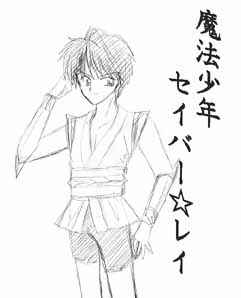
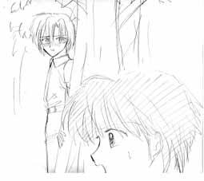
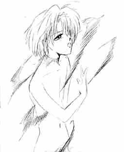
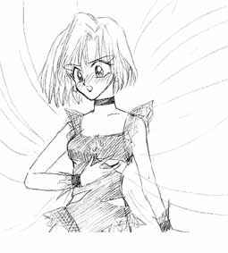

戻る
魔法少年セイバー☆レイ
作：八重洲二世 ／ 画：プリン
キャラ紹介
［聖羽玲（せいば・れい）］
桜学園中等部一年生。十三歳。サッカーが大好きで、なんでも前園さんの言うとおりだと思っているごく普通の少年だったが、あるときを境に、魔法少年セイバー☆レイとしてご町内の平和のために戦う羽目に…。ちなみに小学生の頃（といってもわずか一年前）はミニ四駆にはまっていた。
［御影愁（みかげ・しゅう）］
桜学園中等部一年生。十三歳。聖羽玲の親友だが、性格は玲とは正反対。引っ込み思案で、趣味は読書。人見知りをする方だが、実はとても心の優しい少年である。
［ユリア＝ラプラシアン＝東郷］
魔法次元フェラリラーサから、地球の人間に正しい心を取り戻してもらうためにやってきた、お節介な魔法使い。聖羽玲を善のエージェントとして選び、セイバー・レイへと変身する力を授けた。玲を選んだのは、単にショタ趣味から。
［ゴーリキー＝ガウシアン＝山本］
暗黒次元パイストンウェルからやってきた邪悪な魔法使い。幸いで心豊からしい。悪の魔法少女シルフィー・ミカ（後述）を手下として、人間界に悪の心を広めようと画策する。ロリコンだというもっぱらの噂。
［魔法少女シルフィー・ミカ］
セイバー・レイのライバルである魔法少女。ことあるごとに、邪悪な魔法を使ってご町内を混乱に陥れる。
［天坂なる］
ことあるごとに事件に巻き込まれてしまう、悲運の一般少女。玲や愁の同級生である。

第一四話「漆黒の流星！（見えねー） シルフィー・ミカの脅威」
「これで、おわりだ!!」
レイは、セイバースティックを構えた。
「ゴァ──ッ……」
暗黒獣カマセーヌが猛り狂う。
「外道照身霊波ビィィィムっ!!」
レイの叫びと共に、スティックから光流がほとばしった。
青白い光の奔流は真っ直ぐに伸びていき、暗黒獣カマセーヌの体を貫通した。
「ゴゴ……コノ、オレサマガ、キサマゴトキ、コゾウニィィッ……」
カマセーヌの呪いの言葉はやがて、苦悶の叫びへととってかわられた。
「グァァァッ──!!」
カマセーヌの体組織のひとつひとつが光子へと分解されていく。
一瞬の後、禍々しい暗黒獣の巨体は、その全てがまばゆい光へと浄化されていった。
「ふう……」
レイは、額の汗を軽くぬぐった。
「今度の敵は、いままでになく手強いヤツだったぜ……」
ふと、何か大事なことに気付いたように、レイは顔を上げた。
「いけねっ、今日は愁ん家で一緒にゲームやる約束してたっけ。ぐずぐずしてると、約束の時間に遅れちまうじゃん……」
レイはそう言うと、手近な雑木の茂みへと移動した。宅地造成で年々緑が減ってるとはいえ、このあたりにはまだまだ道の脇に小さな雑木林が残っていて、こういうときには重宝する。
あたりに人影が無さそうなのを確認すると、レイは呪文を唱えた。
このとき、もう少し注意深く確認していれば、レイは気付いていたはずである。通りの向こうから、小脇に本を数冊はさんだ親友、御影愁の姿に……。
「ビビンバ・カルビニ・ユッケジャン、元の姿になーれっ！」
力を持った言霊が紡ぎ出されると、それはオーラとなってレイの体を包み込んだ。
体が内奥から熱く火照ってくるのを、レイは意識する。
オーラの乱流の中で、レイの姿は変化していった。
「ふ…うっ……はあっ……」
小さな喘ぎ声が口をついて出た。変身のたびに全身を貫く奇妙なエネルギーの怒張には、いつまでたっても慣れることができない。決して不快というわけではなく、どちらかといえば快感に属する感覚なのだが、それだからこそ翻弄されてしまう。
腕、脚、胸元が露わになった魔法少年セイバー・レイのコスチューム。見ようによっては、女の子の着物の一変形に見えなくもない、その奇妙な、かつショタ趣味丸出しなデザインは、彼にセイバースティックを授けてくれた魔法次元人、ユリア＝ラプラシアン＝東郷の手になるものである。
その魔法少年のコスチュームが空気に溶けていくかのように消えていき、少年の裸体がオーラの中に取り残される。それも束の間、今度は別種の布地がその体を覆っていく。
すそが少し擦り切れたジーンズに、上半身は黒のタンクトップ。
オーラが完全に収束すると、そこには、どこから見てもごく普通の中学生男子、聖羽玲の姿があった。
バサッ──
何かが落下した音だった。
玲はとっさに、音のした方を振り向いた。
「愁──」
それきり、玲は言葉を継ぐことが出来なかった。
玲の視界に映ったのは、図書館で借りてきたらしい本を取り落としたまま、呆然と立ちすくむ御影愁の姿だった。
愁の驚愕に見開かれた瞳は、まぎれもなく玲の顔を映している。
見られたのだ。
玲の変身の秘密を、魔法少年セイバー・レイの正体を──

「そんな……」
かすかに、親友の喉が震えて、言葉をしぼり出した。
「玲くん……セイバー・レイが……？」
玲は、何かを言おうと口を開きかけた。だが、この場で、この状況で、いったい何を言えばいいというのか。
頭が真っ白になったようだった。
親友を前にして、何一つ、言葉をかけることができなかった。
代わりに、愁が堰を切ったように、激しい調子で玲に詰め寄った。
「ねえ、玲くんだったの？」
「オ、オレは……」
玲は口ごもる。
「玲くんだったんだね、セイバー・レイは。僕をいつも助けてくれた、あのセイバー・レイは……」
「愁、聞いてくれ……オレは……」
「……楽しかった、玲くん？ 何も知らないボクを見てて、楽しかったよね？」
愁の口調には、いつのまにか強い自嘲の色がにじんでいた。
「違うよ、愁──」
だが、玲の言葉を無視して、愁は続けた。
「ボクが高校生の女子にいじめられて、ズボンを脱がされたとき、セイバー・レイは助けてくれたよね。あのとき、ボクはセイバー・レイに、これからはいじめられないように、毎日腕立てと腹筋をするって、約束したんだったね。──約束、守ってたよ。約束した相手が玲くんだとも知らずにね。ボクが一生懸命腕立てしてるのを、笑いながら横で見てるとも知らずに、ね」
「誤解だ、愁！」
そう言いつつも、愁がそう感じて当然だということは、玲にも分かっていた。正義の味方の魔法少年を気取っていた自分が、知らない間に愁の自尊心について無神経になっていたことを、今になって思い知らされた。
「玲くんの、バカヤロー！」
不慣れな罵倒の言葉とともに、愁の右足がけり出された。その一撃は、見事に玲の股間の急所を直撃した。
「ッ──!!」
本能的に内股になり、両手でジーンズの股間を押さえて玲は痛みを噛み殺した。
その間に愁は、逃げるように走り去っていた。
愁にしても、この場に適切な言葉と行動が見つからなかったのかもしれない。
にぶい痛みに耐えながら、玲は荒い息をついた。
「へへ……愁……いい蹴り持ってるじゃんかよ……」
痛みが引いたら後を追おう。
玲は思った。
冷静になって事情を話せば、絶対に分かってくれるはずだ。
なんといっても、愁は、親友なのだから……。
だが、親友の運命が大きくねじ曲げられようとしていることを、このときまだ玲は知らなかった──。
☆ ☆ ☆ ☆ ☆
脇目もふらずに走っていた愁は、ふと足を止めた。
図書館の本を置き去りにしてきたままだった。
そして、玲に自分の勝手な感情をぶつけてきたままだった。
愁の胸中を、後悔の念が駆け巡った。
もともと、感情にまかせて行動するタイプではないだけに、冷静さを取り戻すのは早かった。だが、冷静になるにつれ、それに反比例するように後悔の念は強くなっていった。
──どうして、玲くんの言うことに耳を貸してあげなかったのだろう。
「……戻ろう」
愁はそっとつぶやいた。
戻って、玲にあやまり、そして詳しい事情を改めて聞こうと愁は思った。
だが、そのとき。
陽射しが、翳った。
同時に、愁は軽い目眩を覚えた。
「え……？」
戸惑いの声が口をついて、もれ出た。
いつのまにか、あたりの景色が異様なものに変じている。
いつもの街並みが、まるで曇り硝子を通して見ているかのように、ぼやけて歪んだものになっている。
不意に、背後で人の声がした。
「ようこそ次元と次元のはざまへ、御影愁」
「だ、誰ですか?!」
あわてて後ろを振り向き、愁は緊張した声で問いただした。
そこに立っていたのは、黒一色の外套に身を包んだ、青白い肌の青年だった。整った美貌だったが、青年の顔は生気が通わぬかのように透き通った青磁の色をしている。
「あ、あなたは、誰ですか？」
不安をうち消すかのように、愁は重ねて尋ねた。
すると、青年の面にすうっと、薄く笑いの表情が形作られた。
「──私か？ 私は、暗黒次元パイストンウェルより派遣された全権大使、ゴーリキー＝ガウシアン＝山本……」
愁は怯えた目で青年の彫像のように秀麗な顔を見上げた。
「そして、御影愁。君は、私のもとに引き寄せられて来た……。君の憎しみと怒りの感情──そう、この世で最も甘美にして普遍なる感情、それが君と私の波動を同調させたのだ……分かるか……」
愁は後じさりながらも、いやいやをするように首を振った。
だが黒衣の青年は、こともなげに間合いを詰めた。
すっと、愁の首筋に手をやる。
「あう……」
青年の手から送り込まれた異様な感覚に、愁はくぐもった悲鳴を抑えきれなかった。
「実に、理想的な素材だ……心の奥底に澱み、凝った負の思念……」
うっとりとした口調で青年はひとりごちる。
「は、放して下さい……」
弱々しく、愁は懇願した。
だが。
「放さぬさ……せっかく手に入れた、『素材』なのだからな」
「そ……ざい……？ いったい、なんの……こと……？」
再び、首筋に当てられた手から送り込まれた見えない力に身体をこわばらせ、愁はとぎれとぎれに問うた。
「すぐに分かることだ。──その身をもって」
そう言うと、黒衣の青年は喉の奥で笑いを忍ばせた。
「私の邪魔をするいまいましいフェラリラーサの者ども……そしてその走狗たる魔法少年セイバー・レイ。……ヤツらを出し抜くためには、我々もセイバー・レイに匹敵する、いやヤツをも上回る、悪のエージェントが必要なのだ」
愁のおとがいに指がかけられ、その顔をむりやり上向かせた。
「御影愁、喜ぶがいい。お前は選ばれたのだ。──悪のエージェントとして、な」
「な、何を言ってるの?! いやだよ、悪のエージェントなんて！ セイバー・レイ、いや、玲くんはボクの大事な──」
「お喋りはもうよかろう」
愁の抗議を遮ると、ゴーリキーは愁の首に両手をかけた。
それは首をしめるためなどではなかった。
ゴーリキーの両手がまばゆい白光を発した。
灼熱感が、首筋にはしった。
「お前は私を必要としている……お前の中にある負の思念が、私との契約に応じたのだ」
灼熱感は、耐え難いまでになっていた。
「ウワァァ────ッ!!」
愁の絶叫がほとばしるのと同時に、それまでの灼かれる感覚がうそのように消失した。
青年の手は、いつのまにか首筋から離れている。
愁は喉に手を当ててみた。そこには、何かの異物感があった。
「君にプレゼントだ、御影愁。私との契約の証たる、暗黒の首枷だ」
「!!」
愁の首と同化したように、漆黒の首枷がはめられていた。
首枷は、通常の材質ではなかった。いや、物質ですらない。
それは、光で出来た首枷様のモノだった。──ただし、全てを呑み込むような暗黒の色を「光」と呼べるのなら……。
愁は直観的に悟っていた。この首枷が、禍々しい烙印のように、通常の手段では決して取り除くことのかなわない代物であることを。
「ククク……御影愁、覚えておくことだ。その首枷がある限り、お前の身も、そして心も、決してお前のものではないということを。暗黒の契約により、お前の全存在はいまや、この私に委ねられたのだ」

「そ……そんな……うそだっ!!」
愁の震える叫びに、ゴーリキーはうっとりとしたような表情で聞き入った。
「クク……言っただろう。その身でもってすぐ分かると、と」
そう言ってゴーリキーが指を鳴らした途端、明らかな変化が愁の身に起こった。
「あ……ぐぅっ……」
ゴーリキーの前で、愁は苦しそうに身体中を震わせた。
愁の身体が着ていた衣服が砕け散るように、消失し、華奢な体つきが晒された。
続いて、ゴーリキーのまとう外套と同じ、昏い色の粒子が愁の身体を取り巻き、それらはやがて新たな着衣として身体の上に定着していった。
その間にも、変化に伴う負荷からか、愁は苦しそうに喘いでいる。
全ての変化が終わったとき、愁の身体は、ノースリーブの黒いレオタード状のコスチュームに包まれていた。コスチュームには、ところどころに扇情的な切れ込みが入っていてその部分の地肌を露出させている。そして胸の中央にはには、魔的な意匠が大きく描かれていた。
愁は力つきたように、へたりこむと、その場で肩を激しく上下させた。
愁の姿を見下ろし、ゴーリキーは小さくつぶやいた。
「……私はあの忌々しいユリアなどと違ってショタ趣味ではないのでな。私の趣味に合うよう、少し手を入れさせてもらうぞ……」
「いやだ、やめろっ……」
愁が弱々しく声をあげる。
「御影愁。女になってみる気はないか？ 私の配下には、やはり見目麗しい女が相応しかろう」
「な、なにを言ってるんだ、ボクは男だっ！」
「忘れたのか。お前の身体はもはやお前のものではないということを」
「まさか……」
「そう。変えられるのだよ。いともたやすくな」
ゴーリキーは右手をはね上げた。
すると、それが合図だったかのように、甘いうずきが愁の全身を支配した。
「あううっ……」
「安心しろ。お前のその顔なら、女になっても十分鑑賞にたえるだろうさ。……いや、むしろお前の小綺麗な顔は、女向きかもしれないな」
ゴーリキーの言葉は、愁の記憶野を強く刺激するものだった。
女みたいなヤツ、女顔、オカマの愁……
クラスの男子にはからかわれ、女子には玩具にされた苦い過去だった。
ボクは男だ。
そのたびに心の中で叫んでいた。
そんな愁をはじめて男として認め、親友になってくれたのが、聖羽玲だった……。
そして──
天坂なるの顔が浮かんだ。
クラスの保健委員をつとめる快活な少女の笑顔が。
「ボクは、男なんだっ!!」
愁の叫びはだが、ゴーリキーの冷笑にうち消された。
「クク……ほら、もう変化は始まっているぞ？ お前の意志とは関係なくな」
愁は、両ももの間で、自分の器官がひときわうずくのを感じた。
その部分がうずきを伴いながら、鼠蹊部へと潜り込むように後退していくのをはっきりと感じた。
異様な感覚にただ口をぱくぱくとさせているうちに、変化は完了してしまっていた。
「そのコスチュームでは、圧迫されて苦しかったろう。これで、すっきりしたのじゃないか？」
ゴーリキーは真顔で言う。
「イヤだぁ、こんなのっ!! ボクは女になんかならないっ!!」
愁は、いまや全身を支配する甘いうずきに抵抗しようと、体をのたうたせた。
「これは面白い……せいぜい、抵抗してみろ、愁」
「うあああっ……」
レオタード状の生地が、ゆっくりとだが確実に隆起していった。
とっさに愁は、その二つの隆起を押さえるように、両手を自分の胸に当てていた。
掌に触れた異質な柔らかさ、そして、なによりも胸の先端に生じた敏感な痛みが愁にかすれた悲鳴を上げさせた。
「大きすぎず、小さすぎず、適度なボリュームが私の好みだ……」
やはり真顔でゴーリキーは口にした。
手で押さえているにもかかわらず、その手を持ち上げるように、愁の胸は妖しく変化していった。小さな隆起は、愁の必死の抵抗にもかかわらず、二つの半球へと成長をとげた。

「やめろ……やめて下さい、お願いです!!」
何度目の懇願だったろうか。
だが愁は自分の口をついて出た声に愕然となった。
「艶やかな、良い声だ……」
ゴーリキーは感じ入ったようにつぶやいた。
変声期を経ていくぶん落ち着いたトーンになっていた筈の愁の声は、いつのまにか幼い少年の声質とも幾分異なる、女性特有のトーンに置き換えられていたのだ。
「そ、そんな……」
またしても、可憐な少女の声が愁の喉から発せられた。
声だけではない。
もはや身体全体のラインが、少年のものではありえなかった。
ようやく男としての成長をはじめていたはずの肩幅は、小さな子供のように細くなっていた。
全身の骨格が細づくりに造り換えられ、代わりに優しい曲線がそれを覆うようになっていた。
「ううっ……」
愁はよろめきながら立ち上がった。
その姿は、漆黒のレオタードをまとった少女のものに他ならなかった。
「思った通り、いい仕上がりになったものだ」
ゴーリキーは、整った顔に、満足げな笑みを浮かべた。
「悪のエージェント、暗黒魔法少女シルフィー・ミカの誕生だ──」
降り注ぐような哄笑が異空間を満たした。
愁は、耳をふさいだ。
いや、ふさごうとした。
だが、急速に意識が遠のきつつあった。
ほかの全ての感覚が消失していくなかにあって、ただ高らかな笑い声だけがいつまでも耳をろうしているようだった。
奇妙に引き延ばされた時間感覚の後に、愁の意識は完全な虚無の中へと呑まれていった……。
−−−−− Ａパート終わり −−−−−
−−−−− アイキャッチ（１） −−−−−
−−−−− アイキャッチ（２） −−−−−
−−−−− Ｂパート −−−−−
道路脇でぐったりとしている愁の姿に、玲は一瞬息を呑んだ。
愁の後を追ってしばらく走ったところだった。
玲は、愁のもとに駆け寄った。見た限りでは、それと分かる怪我などはしていないようだった。
「愁！ どうしたんだよ、おい、愁!!」
呼びかけながら、玲は愁の肩を揺すった。
「う……ん……」
玲の声が意識を呼び覚ましたのか、やがて、うっすらと愁の瞼が開かれた。
「だいじょうぶか、愁?! いつもの貧血か？」
玲は心配そうに親友の顔をのぞき込みながら尋ねた。
「あ……玲、くん……」
片手で頭を押さえながら、頼りなげに愁は上半身を起こした。
「ボクはいったい……どうして……」
まだ意識がはっきりとしないのか、夢うつつのように愁はつぶやいた。
「おいおい、どうしたか聞きたいのはこっちの方だぜ。こんな所にバッタリと倒れてて！」
「ボクは……ボクは……道を走ってて、それで……黒いコートを着た人に遭って────!!」
何に思い至ったのか、愁の瞳は、恐怖の色に彩られて大きく見開かれた。
「ボクは、女の子にされちゃったんだっ!!」
震え、うわずった声で、愁は叫んだ。
「……はぁ？」
友人の深刻な表情とはうらはらに、玲はキツネにつままれたような間の抜けた顔になる。
「女の子に、されたぁ？」
玲は首をひねる。
たしかに愁は色白で、顔なども男にしておくには惜しいような繊細な造形だが……。
愁の全身を見渡す。
別段、普段と変わったところなど見受けられない。
ひょいと、玲は愁の脚の間に手を差し入れた。
「あん」
鼻にかかったような声を洩らし、そしてはっとしたように愁は自分の口を手で塞いだ。
「な、なんだよ、妙にイロッぽい声なんか、出して！」
どぎまぎしたような口調で玲は言った。
「ちゃ、ちゃんと付いてるモンは付いてるじゃんかよぉ。いっしゅん、マジで心配しちゃったじゃねーか、もう」
玲は口をとがらす。が、すぐに、表情を緩めて言った。
「心配すんなよ。何の夢を見たか知んないけど、どこも、どうにもなっちゃいないぜ、愁」
「え……」
言われて愁は、おそるおそる自らの手をさしのべた。
しばらく、ごそごそと手を動かす。
「ほんとだ……ついてる……」
愁は首筋にも手をやってみた。そこにも、あの「首枷」の異様な感触は無くなっていた。あのすべてが、幻にすぎなかったかのように……あるいは、幻そのものだったのか──。
二度、三度、愁はまばたきをした。そして、自分を助け起こしてくれた親友の顔をまじまじと見つめた。
「な、なんだよ？ 人の顔ジロジロ見て。……分かってるよ、セイバー☆レイのことだろ。あれは……オレが悪かったと思ってるよ。なんたって、友達のお前を騙してたんだもんな。許してもらえるか、分かんねーけど、オレ、愁が謝れってんなら何度だって謝る！ 愁が殴らせろってんなら、何発だって……」
愁は、小さく首を左右に振った。
その瞳が淡く小さな水の珠を宿し、それはやがて白い頬をゆっくりと伝い落ちた。
「愁……」
「玲くん。謝るのはボクだし、殴られるとしたら、ボクだよ」
手の甲で目をこすり、こぼした涙の照れ隠しに、はにかんだ笑みを浮かべながら愁は言った。
「だって、ボクは大切な友達を信じてあげられなかったんだもの。玲くんが、意地悪でボクにセイバー☆レイのことを秘密にしてたわけないって……そんなこと、少し考えれば分かることなのに……」
「お、おいおい、愁……そんな、その……そんな、自分ばっか謝んなよォ。オレだってやっぱり悪いし、オレ単細胞だから愁の気持ちとかあんまり考えてなかったし……」
玲は、きまり悪そうに頭をかいた。
「じゃあ、プラスマイナス・ゼロってこと……かな？」
「ぶらすまいなす……？」
玲は、一瞬、首をかしげた。愁はときどき大人びた言葉を使って、玲を戸惑わせる。
「プラスマイナス・ゼロ。おあいこ。お互い、もう一度ずつ謝ったら、今度のことはこの場で、水に流せる、かな？」
愁の提案に、ぱっと玲の顔が輝いた。もともと、深刻なのは苦手なたちなのだ。悩んでいるのも性に合わない。玲は、一も二もなく提案に飛びついた。
「そうだな。そうしようぜ！」
愁は立ち上がると、改まった感じで玲と向かい合った。
「ごめんね、玲くん」
「オレが悪かった、愁！」
お互い、ぴょこんと頭を下げる。
が、玲は勢い良く頭を下げすぎ、愁の額にヘッドバットのきつい一発を入れる結果となった。瞬間、二人の視界に火花が飛び散った。
「あたーっ！」
「いたた、もう、ひどいよ玲くん」
耐久力に乏しい愁は、ヘッドバットの一撃でグロッキーになっていた。
「ワ、ワリィ、愁……」
「気をつけてよね。──で、さ、玲くん。教えてくれる？ 玲くんが、どうしてセイバー・レイになったのか」
「ああ」
玲は、大きく頷いた。
「愁にだけは、教えるよ。……言っとくけど、オレたち二人だけの秘密だぜ？」
「──うん！」
玲は、愁にすべてを話して聞かせた。
ユリア＝ラプラシアン＝東郷と名乗る人物との遭遇から、現在に至るまでの、魔法少年セイバー・レイとしての活躍のすべてを……。
玲が「正義のエージェント」として変身能力を授かったことを話したとき、愁の顔がいくぶん青ざめたように見えた。
「どうした？ 何か、気になることでも？」
「そんなはずは……そうだよ、あんなこと、ありえないもの……あれは、夢だったんだから……」
「なにがだよ、愁？」
「う、ううん。なんでもない。ヘンな夢見たから、ちょっと神経質になってただけなんだ」
「そっか。オレはてっきり愁まで魔法少年の力を授かったとでも言い出すかと思ったよ」
「ま、まさか。何言ってんの、玲くん」
愁は少しばかりぎこちない笑顔で、アハハ、と笑った。
「あれぇ、聖羽くん！ それに、御影くんも！」
通りがかったのは、天坂なる、玲たちのクラスメイトだった。ふわりとした柔らかい栗色の髪が目を引く、愛くるしい少女である。いままで学校に居残っていたと見え、身につけているのは学校指定のシンプルなブラウスと紺のプリーツスカート、それにスカートと同じ色のベストだけだった。手に下げている鞄には、女の子らしい、手作りのマスコットが結わえ付けられている。
「どうしたの二人とも、そんな往来の真ん中で？」
なるは立ち止まって、尋ねた。いつもの天真爛漫な笑顔を浮かべて。
愁は、なるの笑顔にしばし見とれたかと思うと、うっすらと頬を赤らめ、隠れるように玲の陰に回った。
「なんでもねーよ。愁がちょっといつもの貧血起こしただけだよ」
ぶっきらぼうな調子で、玲は答えた。このくらいの年頃にありがちな、異性にわざと冷たい態度をとる、少年特有の反応パターンだった。
だが、なるは男子のそういう反応を少しも気にしないタイプだった。
「あやしーぞぉ。二人だけでナニをしてたのかなァ？」
冗談めかせて、なるは言った。
「へんなこと言うんじゃねーよっ！ あっち行ってろよ、ばか、ブス！」
玲はむきになって声を張り上げる。
なるが実は、少女向け小説『炎の蜃気楼（ミラージュ）』シリーズの大ファンで、読書仲間の少女達となにやら怪しげな同人誌を作っては即売会に参加したりしていることを、玲は知らない。
「ごめんごめん。最近、男の子二人の組み合わせ見ると、すぐ思考がそっち走っちゃってさ」
なるは、ぺろっと舌を出し、可愛く笑って見せた。
その様子をまぶしそうに見つめる愁の姿に、玲は気づきもしなかった。
「女の考えることは、ワケ分かんねーよ」
「そうだね、聖羽くんは特に女心分かんないタイプよね」
なるは、含みのある言い方をした。
「分かりたくもねーやっ」
相変わらず、つっけんどんな口調で玲は言う。
「行こうぜ、愁。今日はお前ん家で、ゲームする約束だろ？」
「あ、うん、そうだよね」
二人の会話にすかさずなるが割り込んできた。
「え、ゲーム？ ポケモンとか？ それとも、プレステのやつ？」
「ばーか、そんなんじゃねぇよ。愁ん家にあんのは、パソコンだよ、パソコン。そこらのゲーム機とは格が違うやつ」
「へー、そうなんだ。なんてパソコン？」
なるの質問に、おずおずと愁は答えた。
「あの…Ｘ−１ｔｕｒｂｏモデル２０ていうんだ。本当はお兄ちゃんのパソコンなんだけど」
「へー、いいマシン持ってるんだね、お兄さん。いまどきザイログの石積んだマシンなんて貴重だよォ。モデル２０っていうと、たしかデータレコーダも内蔵してるよね？ だったらさ、テープ版のザナドゥとか持ってない？」
「あ、あるよ」
「ほんと?! あたし一度でいいから、テープ版で動くザナドゥやってみたかったの。ソフトウェアでテープの頭出しができるＸ−１シリーズならではのゲームだもん！ ほかにどんなゲームがあるの?!」
なるは、コミケなどのイベントに良く顔を出している関係からか、男の子向けのホビーにも通じている方だった。
「えっと、ゼビウスでしょう…それから、野球狂とか…あと、惑星メフィウスとか…」
「うわぁ、いいな、いいなー。あたし、スターアーサー伝説シリーズの隠れファンで、アーサー様総受けのコピー本とか出そうと思ってるくらいなの。シティって入力するとホンダ、ホンダってメッセージが出たりとか、演出もすごい気がきいてるし……ねぇ、あたしも一緒にお邪魔しちゃダメ？」
「え〜〜、ダメだよ、んなの」
玲は牽制するように言った。
「女が来るとうざくなるから、ダメだねっ」
「そんなぁ……ねぇ、御影くん、お願い！ いいでしょ、ねっ？」
そう言って、なるは心もち小首を傾げてみせた。
「うん……天坂さんさえ良ければ、うちにおいでよ」
愁はいつのまにか、玲の背後から身を乗り出していた。
「やったぁっ！ アリガト、御影くん、愛してるうっ」
なるは全身で喜びを表現するようにぴょんぴょんと飛び跳ね、それから、無邪気な仕草で愁に抱きついた。
愁は、あけっぴろげななるの感情表現に、ただ顔を耳まで真っ赤にして、嬉しさと照れくささのために硬直するだけだった。
「ちぇーっ、愁は女に甘いんだからよぉ……」
玲はひとりで不服そうにしていた。
☆ ☆ ☆ ☆ ☆
ゲームの途中で、玲が手洗いに行くため席を外したときだった。
なるは、ごく自然な調子で愁に向かって問いかけた。
「ねえ。玲くんって、好きな子とか、いるのかなァ？」
愁は、しばらく無言でパソコンのモニターと向かい合ったままだったが、ややあってから口を開くと、ぽつりとこう言った。
「ボクには分かんないよ」
「そっか」
なるは、うなずいた。
ちょうどそこへ玲が戻ってきて、それきり、その話題が双方の口にのぼることはなかった。
☆ ☆ ☆ ☆ ☆
『お邪魔しましたァ』
玲となるの声が唱和する。
夕方の六時を過ぎていたが、愁の家にはまだ両親や兄の姿はない。
すでに日が暮れかかっていると知り、玲は舌打ちした。
「おい、天坂。おまえんち、どっちだっけ？ しょうがねぇから送ってってやるよ」
玲の言葉に、なるは悪戯っぽく笑い返した。
「ナイトを気取るには十年早いんじゃないの？」
「っの、ばかブス！ 人の親切を……」
「アハハッ、ごめんごめん。でも、だいじょうぶだから。お気づかいなくっ！」
そう言うと、なるは元気に手を振って、駆け足で去っていった。
「だから女ってやつは……あ、じゃあな、愁。また明日な！」
そう言い残すと、玲も家路についた。その後ろ姿を見送ってしまうと、後に残されたのは、愁ひとりだけだった。
部屋に戻ると、愁はパソコンの電源をオフにした。
長年の経験が、画面の中の陽気なゲーム・キャラクターは、ひとりきりの寂しさを増幅しこそすれ、癒してなどくれないことを教えている──。
「浮かない顔だね、ロンリーボーイ」
小さな子供のような声だった。
愁はぎょっとしてあたりを見回した。
「ここだよ、ここ。おーい、どっちを見てるんだ」
声は、愁の足元から届いた。
おそるおそる、目を下に転じると、そこには仔猫サイズの動物が一匹、後肢で直立し、愁の顔を見上げていた。
「バ、バケモノっ!!」
愁が叫んだのも無理はない。その動物は、トイ・ショップの店先から抜け出したヌイグルミのようなファンシーな外見をしている。そのヌイグルミが立って人間の言葉を喋っているのだから。
ヌイグルミは短い前肢で腕組のような仕草をした。
「バケモノとは失礼してしまうね、御主人サマ。──俺様は、暗黒小動物ヤエスゥ。ゴーリキー様に、御影愁……魔法少女シルフィー・ミカのサポート役を仰せつかったってワケ。ま、今日から俺様は君の忠実な部下ってことだ。オーライ？」
「うそだっ、あれは全部夢だったんだから──」
愁は、悪夢の中でもがくように、のろのろとした動作で小動物の前から逃れようとした。
そのとき、愁の襟首のあたりに、チリチリと焼かれるような痛覚がはしった。
「くうっ！」
首にはいつの間にか、あの忌まわしい感触が甦っていた。暗黒の首枷は、消えてなどいなかったのだ。
『どうだ、御影愁。私からのプレゼント、暗黒小動物ヤエスゥは気にいってくれたかな』
今度こそ、何も無いはずの空間から声だけが響いた。
それは、まぎれもなく、ゴーリキー＝ガウシアン＝山本のものだった。
『どうした？ まさか、私との“契約”を忘れたわけではあるまいな？ クク……その契約の印がある限り、忘れたくても忘れられないだろうがな。我らが必要とするとき、お前はシルフィー・ミカに変身しなくてはならないのだ。──変われ!!』
再び、あの異空間で愁の身をさいなんだ、変化の荒波が押し寄せた。
「うああああっっ!!」
尾を引く悲鳴とともに、御影愁は魔法少女シルフィー・ミカへと変貌をとげていった。
「おや？ 新作の暗黒コスチュームですか、ゴーリキー様」
シルフィー・ミカの姿を見て、ヤエスゥは次元の彼方に向かって問いを発した。
『……そうだ』
「メイドさん風とはまた、マニアックな趣味に走りましたね、ゴーリキー様」
ヤエスゥの言う通り、以前はレオタード地を基調としていたシルフィー・ミカのコスチュームが、今度はエプロン・ドレスに酷似したデザインに置き換えられていた。
『黙れ。下等な暗黒小動物ふぜいが私の趣味に口を出すか？』
「いやいや、滅相もない。あっしは命令に従うだけの駒にすぎませんよ」
ヤエスゥは、のらくらと叱責を受け流した。
『まあ、いい。──さて、シルフィー・ミカ。どうだ、気分は？』
シルフィー・ミカは、俯き加減だった顔を上にあげた。
「最高ですよ」
シルフィー・ミカは透き通るメゾ・ソプラノの声で答えた。
御影愁のおどおどとした面影は、すっかり影をひそめているように見える。
その瞳は、悪のエージェントとしての冷酷無比な光を宿していた。
「見事なもんだ。深層意識にある暗黒因子が完全に表層意識を押さえ込んでる」
ヤエスゥは、感心したようにひとりごちる。
『聞け、シルフィー・ミカ。すでに町には、暗黒獣ヘナチョコイダーを送り込んである。お前は暗黒獣を操って、町を混乱に陥れるのだ。セイバー・レイが出てきたら、叩きつぶせ！ お前の力の程を見せつけてやるがいい』
「了解しました」
ミカは、ヤエスゥをすくい上げると、肩の上に乗せた。
『だが、無理はするな。お前はまだその身体に慣れていない。危ないと思ったなら迷わず退け。私としてもつまらん力押しで手駒を失いたくはない』
それを聞いて、ミカは、不敵に笑って見せた。
「フフ、ご心配なく。セイバー・レイごときに、手間どりはしませんよ」
ぬめるような舌先で紅い唇をひと舐めする。
『頼もしいな。期待しているぞ──』
言い置き、ふっつりとゴーリキーの声は途絶えた。
ミカは、トンと床を蹴った。その体が宙に浮いたと見えたとき、ミカの姿は空気に溶けたように消えていた。
☆ ☆ ☆ ☆ ☆
ジーンズのポケットの中で、ピコピコと何かを警告するような音がした。
「ゲッ！」
玲は、ポケットに手を突っ込むと、“暗黒獣レーダー”を取り出した。
セイバースティックと一緒に魔法次元人ユリアから授かったアイテムで、その名の通り、暗黒獣の出現とその現在地を知らせる機能を持っている。
不意に、道を走っていた車が一台、路上で無理にＵターンをし、玲の前までやってきて停まった。
ポルシェだった。車にはあまり詳しくない玲でも、分かった。
運転していたのは、若い男だった。初対面の相手だが、身なりや顔つきからいって、三高の青年実業家に違いないと見た者を確信させる雰囲気が漂っている。
助手席には、これまた三高の青年実業家にお似合いの、ファッションモデル風のゴージャスな女が座っている。
が、男は、怪訝な顔をしている女を突然、車から蹴り出した。
「きゃーっ、どうしたのよ、三条院さん?!」
「やかましい！ とっとと失せやがれ、メスブタが。貴様の化粧くさい顔はもう見飽きたんだよっ」
男は乱暴にそれだけ言うと車を降り、女には目もくれずに玲の方に近づいてきた。
玲の前で少し腰をかがめると、男はうってかわったようなさわやかな微笑みを浮かべ、話しかけてきた。
「やあ、見苦しいところをお目にかけてしまったようで済まない。僕の名前は三条院隼人、肩書きは、世間一般でいうところのヤン・エグってやつになるかな」
男は、優雅な仕草で目にかかった前髪をすきあげてみせた。
「どうだい、これから僕とチョコパフェでも食べにいかないか、少年？ 窓からの夜景が最高にきれいなパフェ屋を知ってるんだ」
「いや、オレ、甘いものキライだし……」
逃げ腰になりつつ、玲はあたりさわりのない答えを返した。
（あぶねーヤツだな、おい……）
玲が心中そうつぶやくのと、男の目が異様につり上がるのとは同時だった。
「ええい、まだるっこしーっ」
男は雄叫びを上げた。
「俺はなんだか先程から、無性に、腰が細くて顔立ちの整った少年と色々あーしたりこーしたり、ものごっつくエッチなことをしたくてたまんない切ないムードなんじゃぁぁぁぁ」
「ぎゃあああっ！」
男は有無を言わせず、玲の上に覆い被さってきた。反射的に男の股間を蹴り上げると、玲は脱兎のごとく逃げ出した。
ひとしきり全力疾走し、男をまいたことを確認すると、玲は壁にもたれてゼイゼイと息を整えた。
その玲の影法師の一部分が突然、ムクムクと地面から盛り上がってきた。
盛り上がった部分はやがて小動物──小型のうさぎともネズミともつかない奇妙な小動物の姿をとった。
「玲君、これは『事件』よっ！」
魔法小動物“ネギミソ”だった。
セイバースティックと暗黒獣レーダーとともに魔法次元人ユリアから授かった小動物で、本人はセイバー・レイのアドバイザーを気取っている。
「暗黒獣のしわざか?!」
「ええ。さっきの男性からは、暗黒魔法のオーラを感じたわ。きっと、暗黒獣に操られてるのよ」
「分かった！」
玲は、物陰に飛び込むと、セイバー・レイへと変身した。
暗黒獣レーダーを見る。
暗黒反応の中心地は────現在地と重なっていた。
「死ぬでチョコ!!」
「危ないっ、セイバー・レイ!!」
レイの頭上から破壊光線が降り注いだ。
間一髪、レイは横ざまに跳んでかわした。
「くそっ、暗黒獣め！」
塀の上に蛸型の上半身とヒトの下半身を持った異形の存在がたたずんでいた。暗黒獣ヘナチョコイダーだった。
「オホホホホホ。良くかわしたでチョコ。しかし次は……」
「やかましいっ、やられキャラが！」
みなまで言わせず、レイはスティックを振り回してヘナチョコイダーに飛びかかっていった。
「失礼なやつでチョコ」
意外にも身軽に玲の攻撃かわし、ヘナチョコイダーは路上に飛び降りた。
「今回のやられキャラは、セイバー・レイ、お前チョコっ！」
ヘナチョコイダーは吸盤つきの手でレイを指さした。
「言ってろ、タコ。きっちり一分でカタつけてやる！」
レイは余裕たっぷりに言い返した。
一瞬後、その顔から余裕の笑みが消え去った。
ジャカジャーン…………
それは、ギターの音色だった。
レイの背後で、第三の声が言った。
「いいや。セイバー・レイ、悪いが今日は貴様の命日だぜ」
ジャンジャンジャカジャーン…………
ギターのコードをかき鳴らす音がしばし響いた。
「だ、誰だっ?!」
レイは首を巡らせた。
「！」
ひときわ濃い影の中から、ギターを抱えた一人の少女が姿を現した。
少女の歳のころはレイと同じ程度だろうか。すらりと伸びた手足の白い色が闇に映える。
美少女だった。
そして、少女の衣装は──
「メイドさん……？」
レイは目を白黒させた。
どうしてこんな処をメイドさんがほっつき歩いているのか。──しかも、ギターをかき鳴らしながら。
フッと少女は口の端を小さくつりあげて笑った。
「おれが誰かって？」
少女はギターの弦を手で押さえた。音の余韻がぴたりと止まる。同時に少女のまわりの空気がピンと張りつめたようだった。
少女の肩に乗っていた奇妙な小動物が、素早い動きで地に降り立った。少女はギターを小動物にあずけた。小動物はギターをひきずるようにして、少女の背後へとまわった。
「おれの名は、暗黒魔法少女シルフィー・ミカ。覚えておくといい。おっと、忘れる前に、あの世に行っているか……」
「それは分かったが、どうしてメイドさんみたいな格好をしている?!」
レイはもっともな疑問を口にした。
「これか」
シルフィー・ミカは、スカートの布地をつまんで持ち上げた。
布地の下から、すべらかに曲線を描く少女の肌がのぞいた。
「フン。上の人間の趣味でね」
そっけなくシルフィー・ミカは言う。
思いもかけない扇情的な姿に、レイの鼓動は我知らず高鳴っていた。
シルフィー・ミカは、同年代の少女が決して持ち合わせない神秘的な美しさを持っていた。その美しさは、処女のものであり娼婦のものであると同時にまた、どちらのものでもない……。
レイは瞬間的に魅了されていた。そして、かすかに少女の顔立ちに、自分の知る親しい誰かの面影を感じてもいた。だが、それが誰かはどうしても分からない。
「どうしたスケベ魔法少年。おれの脚に目線は釘付けか？」
小さな朱の唇が嫣然と微笑んだ。
その言葉にはたとレイは我に返る。
「う、うるせーっ!!」
戻る